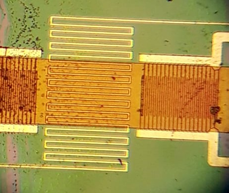
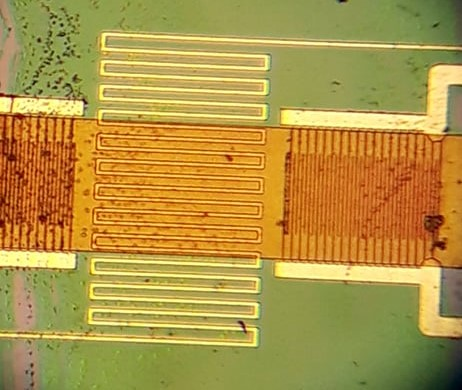

Module Smart Device
Pour ce module, nous avons suivi différents cours.
Un cours sur les capteurs s'est concentré sur les principes qui sous-tendent les capteurs et leur fonctionnement. Ce cours était très intéressant car les capteurs sont essentiels dans notre domaine et il est crucial de savoir comment ils fonctionnent.
Nous avons également fait quelques exercices pratiques sur ce sujet. Il y avait également des tutoriels sur la programmation Arduino et le logiciel de conception de PCB KiCad.
1 - Présentation
1.1 - Nano-capteurs conception d'un capteur de gaz - Conception d'un capteur de gaz
Dans le cadre de ce module, nous avons été invités au laboratoire AIME pour réaliser un capteur de gaz. L'AIME (Atelier Interuniversitaire de Micro-nano Electronique) est un laboratoire en salle blanche avec du matériel haut de gamme.
Notre capteur de gaz utilise le principe suivant : la conductivité des nanoparticules de trioxyde de tungstène varie en fonction du gaz qui l'entoure. Par conséquent, en mesurant la conductivité, nous pouvions évaluer le type ou la proportion de gaz qui l'entoure. Cependant, ce principe ne fonctionne qu'à haute température.
Pour commencer, nous avons appliqué un protocole qui nous a été donné par notre professeur pour synthétiser les nanoparticules de trioxyde de tungstène WO3. Nous voulions qu'elles aient une forme de bâton. Pour chauffer les nanoparticules, nous plaçons une résistance chauffante entourée de polysilicium dopé. Nous plaçons également une couche d'aluminium, dont la résistivité varie avec la température et qui nous permet donc de mesurer la température de surface du capteur.
Les nanoparticules sont ensuite déposées sur les couches de polysilicium et d'aluminium, entre 2 peignes espacés comme le montrent les figures ci-dessous. C'est pourquoi nous voulions que nos amas de nanoparticules aient une forme de bâton.
 

Nous l'avons placé dans un écran de protection et avons soudé avec précision ses broches aux différentes broches des capteurs (broches de chauffage, broches de mesure de la température et broches de résistivité des peignes de capteurs), comme vous pouvez le voir dans la figure ci-dessous.

Nous avons ensuite vérifié avec un microscope électronique si les nanoparticules de trioxyde de tungstène étaient bien formées et bien déposées sur notre capteur.
Enfin, nous avons fait quelques tests pour vérifier comment la résistivité de notre capteur varie avec la concentration d'éthanol et la concentration d'ammonium. Nous avons également mesuré les réactions de la résistance chauffante et du capteur de température à une tension d'entrée pour définir sa tension nominale d'utilisation.
Livrable : Sensor Datasheet
1.2 - Microcontroller and Open Source Hardware (MOSH)
1.2.1 - Circuit d'adaptation et écran pour notre capteur de gaz
L'impédance d'entrée de la carte Arduino Uno que nous utiliserons pour effectuer nos mesures est beaucoup plus faible que l'impédance de sortie de notre capteur, et un circuit d'adaptation est donc nécessaire. Notre professeur a proposé le circuit d'adaptation. Il possède des filtres et fonctionne comme un convertisseur de courant en tension.
Pour vérifier que ce circuit fonctionnerait, nous le simulons en utilisant LTspice un logiciel de simulation de circuit analogique. Nous produisons le circuit proposé et simulons le capteur avec une fonction d'impulsion (similaire à ce que nous avons mesuré lorsque nous avons fait des tests sur notre capteur) avec un courant d'entrée similaire à celui de notre capteur et nous obtenons une tension de sortie dans la gamme des caractéristiques d'entrée de notre Arduino.
Enfin, nous avons été chargés d'intégrer le circuit d'adaptation dans un blindage PCB, qui s'interconnecterait :
- les broches de résistivité du capteur à l'entrée du circuit d'adaptation
- la sortie du circuit d'adaptation à l'une des broches d'entrée des cartes
- les broches du polysilicium à la broche Vin (qui copie l'alimentation de la carte)
Nous avons conçu ce blindage en utilisant KiCad.
Livrable : KiCad PCB Design files LTSpice simulation files
1.2.2 - Fabrication d'un appareil intelligent
Comme mentionné dans la partie précédente, nous utilisons une carte Arduino Uno. Pour la communication, nous utilisons le protocole LoRaWAN. Sur le campus de notre école INSA, une passerelle LoRaWAN vers The Things Network a été mise en place par des étudiants précédents. Nous avons soudé une puce RN2483 et une antenne sur une carte à broches et l'avons connectée à l'Arduino pour l'alimentation et les mesures.
Nous connectons ensuite un capteur de gaz (pas celui que nous avons construit mais un capteur commercial) à la carte Arduino Uno.
Après avoir créé un compte sur la plateforme The Things Network (TTN) (qui nous donne un ID d'application et une clé de sécurité pour crypter la communication), nous poussons un code sur la carte qui collecte les valeurs des capteurs et les envoie à la plateforme TTN. Nous avons pu collecter ces valeurs sur la plateforme TTN qui offre également une API (REST) pour collecter ces données et les intégrer à n'importe quelle application telle qu'une IHM ou une surveillance.
Livrable : Code Arduino
2 - Partie technique
Ainsi, deux modules composent cette UF :
- Nano-capteurs (AIME)
- Microcontroller and Open Source Hardware (MOSH)
2.1 - Mes fonctions
La réalisation de ce projet s’est faite par groupe de trois. Mes partenaires et moi-même avons travaillé sur les mêmes aspects.
Dans un premier temps, nous avons connecté le capteur de gaz à la carte Arduino Uno afin de récupérer les valeurs que nous avons ensuite envoyé sur le réseau LoRa.
Puis, grâce à The Things Network et Node-RED,
nous avons créé un dashboard permettant à l’utilisateur de visualiser la valeur du capteur de gaz et de le calibrer si besoin.
Pour la création de la carte Arduino, nous avons suivi les instructions dispensées par le professeur pendant les cours et nous sommes parvenus, étape par étape, au résultat escompté.
2.2 - Résolution des problèmes
Comme je n'étais pas familier avec l’environnement Arduino, le développement du software a été une première pour moi. En effet, de par formation initiale ( Informatique et Réseau), j'avais déjà des compétences en langage C.
Pour ce qui est de la communication sur le réseau LoRa et l’utilisation de The Things Network et Node-RED, les cours dispensés dans
l'UF "Middleware and Service"
ainsi que mon background technique m'ont permis de réaliser ces différentes tâches sans problème.
Le design de PCB et le routage des circuits sur KiCad étaient également tout à fait nouveaux pour moi.
KiCad est un outil très puissant offrant beaucoup de possibilités dont il a parfois été difficile de s’approprier.
J'ai également dû rafraîchir mes connaissances en électronique (Prépa intégrée). Ce problème a été résolu puisque des tutoriels vidéo étaient disponibles en ligne.
Finalement, nous sommes parvenus à nos fins en découpant le travail étape par étape et en suivant les indications dispensées en cours.
2.3 - Bilan
Venant d'une formation en Informatique et Réseau, mes connaissances en physique proviennent de mon lycée et de mes deux premières années à l'INSA. Cela a été un peu un problème lorsque j'ai essayé de suivre les cours et exercices sur les capteurs ainsi que notre stage AIME. La bonne chose est que les enseignants de ce module étaient très compréhensifs et conscients de cette situation. Ils n'ont pas hésité à prendre le temps d'expliquer certaines notions qui auraient pu être évidentes pour les étudiants en physique. Les étudiants d'autres disciplines nous ont également aidés à surmonter cette difficulté. Enfin, je remercie particulièrement Monsieur Grisolia car il a été très pédagogue et à l'écoute aux sollicitations des étudiants.